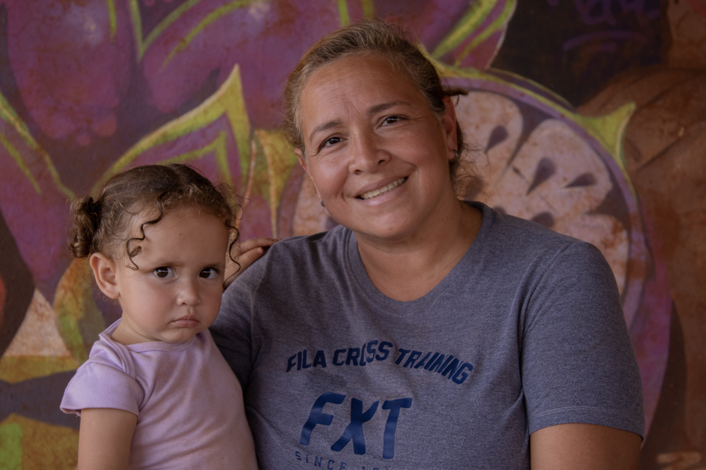

Mujeres Valientes en Vuelo: a imigração feminina em Londrina
Como mulheres venezuelanas reconstruíram suas vidas no norte do Paraná
“Lá o dinheiro não dava. Mesmo trabalhando o mês todo não dava pra fazer uma compra boa, as crianças não podiam estudar porque não tinha comida na escola e tinham que levar produtos de limpeza”
O relato é de Sorelis Rodriguez, apenas uma imigrante dentro dos 87 mil venezuelanos que vivem no Paraná, segundo dados do Observatório das Migrações Internacionais (OBMigra). Esta reportagem acompanhou os motivos, receios, efeitos e sentimentos de mulheres venezuelanas que vivem em Londrina, no norte do Paraná.
Sorelis tem 31 anos, está há nove anos no Brasil e hoje possui uma mercearia na comunidade onde mora, de onde tira o sustento para a família. Ela foi a primeira mulher venezuelana a chegar na comunidade Flores do Campo, uma ocupação urbana que abriga cerca de mil famílias que trabalham muito para garantir um melhor futuro para seus filhos.
A luta diária pela garantia de um amanhã mais promissor apresenta-se como o principal motivo da cruzada de quase 5.570 km que separam Barcelona, em Anzoátegui, na Venezuela, da cidade paranaense. Yanetzi José Rivas é coordenadora do grupo de imigrantes na comunidade de imigrantes e compartilha dos esforços da colega de vizinhança.
“Aqui nós também viemos com o propósito de trabalhar e dar um futuro a nossos filhos.” Disse ela acompanhada da neta. E também ressaltou como a comunidade, apesar da distância de 12 km do centro da cidade interiorana, anseia pela melhora na qualidade de vida. “Aqui você consegue ver que cinco e meia da manhã o ônibus já está lotado porque viemos com o mesmo propósito que o brasileiro, o de trabalhar”

“Eu já nem penso mais em mim, penso nos meus filhos. Aqui eles podem estudar, têm transporte e comem bem.”
A LÍNGUA COMO BARREIRA
No entanto, ao contrário de seus filhos e netos que crescem acostumados com o idioma, elas enfrentaram obstáculos com a língua em suas chegadas. A proximidade linguística entre o português e o espanhol cria a falsa sensação de fluência, para ambos os lados.
Os desafios com o dialeto brasileiro somados a todas as questões que envolvem abandonar seu país criaram nelas a insegurança na comunicação diária. Principalmente Yanetzi que chegou a Londrina apenas uma semana antes do início do período de quarentena causado pela pandemia em 2020. “Pra mim foi muito difícil. Eu não podia sair e falar com ninguém, não podia bater papo com o vizinho. Eu me perguntava como iria aprender a falar o idioma”.
Ela ainda completa que aprendeu o português com o uso da internet e que sua pronúncia de certas palavras e o uso de falsos cognatos – palavras que se parecem foneticamente nos dois idiomas mas possuem significados distintos – ainda causam estranheza em algumas pessoas.
O DESEJO DE VOLTAR, OU A FALTA DELE
Embora haja saudades no coração delas, não há o desejo de voltar para casa.
"Sinto saudades da praia, da minha casa, da minha família e dos meus vizinhos. Sinto falta do meu país” Contou a avó emocionada, enfatizando que para além disto, por mais que seja grata ao acolhimento que o Brasil lhe proporcionou, também sente muita falta da cultura venezuelana.
Sorelis, por mais sorridente que tenha sido contando sua trajetória da Venezuela até Londrina, assume uma postura séria ao declarar não ter vontade de regressar a seu país. Novamente, ela enfatiza a preocupação com o futuro dos filhos. Mas não nega totalmente a possibilidade.
“Eu não quero mais voltar lá, pelo menos não por enquanto. Talvez mais pra frente para visitar algum parente ou algo assim. Mas a minha vida eu quero fazer aqui no Brasil.”
Por mais que migrar nunca seja uma trajetória fácil, representou um novo começo para essas mulheres.

Yanetzi com sua neta no colo.